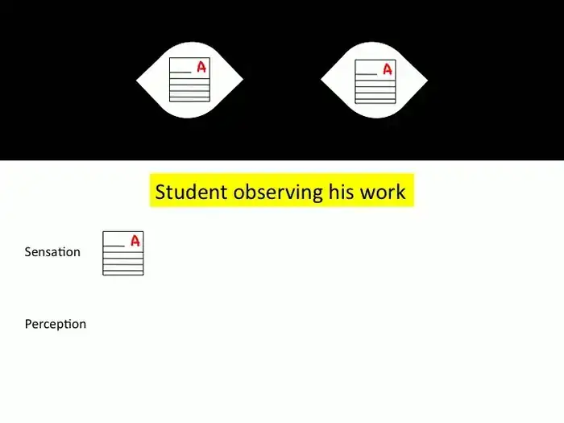

The illusion
Look at a wall clock with a ticking second hand, and the first tick after your eyes move seems to last about a second and a half. The effect is called chronostasis, or the stopped-clock illusion, and it was characterised by Kielan Yarrow and colleagues in 2001.
Maps, diagrams and images


The cause is a saccade: when the eyes move, the visual system suppresses input for a fraction of a second to avoid a blur of motion. During that gap it has no image, and it backfills the gap with the first stable image it receives — so the second hand appears to have been still for longer than it was.
What it tells us
It is a direct demonstration that perceived time is constructed, not measured. The brain does not have a clock; it has a set of processes that estimate duration from events, and when the events are missing, the estimate is patched.
The illusion is small, reliable, and easy to demonstrate, which is why it appears in every perception course. It is also the reason 'time seemed to slow down' is a poor basis for any claim about the nature of time.
Documented: the illusion occurs reliably, and the magnitude is measurable.
Documented: it is tied to saccades and to the suppression of visual input during them.
Documented: it is a construction of the visual system, not a change in time.
Not established: any general mechanism for 'time slowing' in danger, which is a different and much weaker claim.
The lesson: subjective duration is an estimate made by a system with holes in its data.
Why it is in the archive
Because the archive's pages on time — the arrow, phantom time, time paradoxes — all depend on the difference between time as measured and time as experienced. This is the smallest, cleanest demonstration of that difference.
Open resources on this topic
- PapersOpen-access articles: DOAJ · PubMed Central · Internet Archive Scholar
- BooksPublic-domain and borrowable copies: Open Library · Project Gutenberg · Google Books · Internet Archive
Cite this page
Momin, S. (2026). Chronostasis. The Larger World Archive. https://drsamonline.github.io/LARGE_GLOBE/chronostasis.htmlMomin, Sohil. “Chronostasis.” The Larger World Archive, 2026, https://drsamonline.github.io/LARGE_GLOBE/chronostasis.html.Momin, Sohil. “Chronostasis.” The Larger World Archive, 2026. https://drsamonline.github.io/LARGE_GLOBE/chronostasis.html.@misc{chronostasis2026chronostasis,
author = {Momin, Sohil},
title = {Chronostasis},
year = {2026},
howpublished = {The Larger World Archive},
url = {https://drsamonline.github.io/LARGE_GLOBE/chronostasis.html},
note = {Last reviewed 20 November 2026}
}Last reviewed 20 November 2026 · Corrections policy · this page is not peer reviewed
Sources for this page
- Wikipedia, “Chronostasis” — the illusion and its mechanismen.wikipedia.org
- Wikipedia, “Saccade” — the eye movement that causes iten.wikipedia.org
- Wikipedia, “Time perception” — how duration is estimateden.wikipedia.org
- Wikipedia, “Saccadic suppression of image displacement” — the gap that gets filleden.wikipedia.org